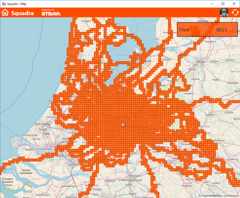
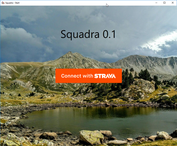

Squadra
With Squadra you can explore the outside world by going to those places you've never been before.
Squadra analyzes all your Strava activities and displays them on a map containing visited squares
of approximately 2.5 km * 2.5 km.
Now go out and explore new areas!
Stores
Windows Store
Android
IPhone/IPad
Features

1] Login with your own Strava account
2] Asks permissions to access your activities
3] Gets activities from Strava
4] Analyzes all activities for visited squares
5] Stores all visited squares in a local database
6] Displays all visited squares + some statistics in a map
7] Requests location permission in order to position the map on the users location on startup.
It does not log or distribute locations in any way.
